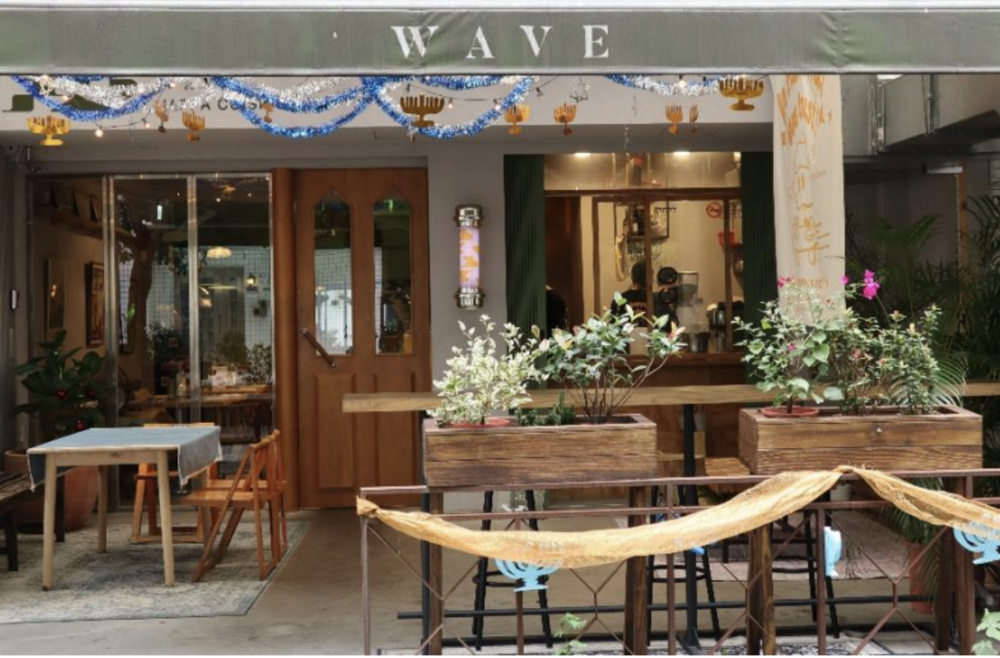

Winnie W.Y. Yao
Hello world! I'm Winnie Yao. I’m a master's student at University of California, Berkeley, where I study journalism and pursue a data science certificate.
I design, visualize data, and create motion graphics.
When I’m not working for deadlines, you might find me doing jigsaw puzzles. 🧩 ✨

Election Day results: Gallo leads Oakland City Council District 5
A Q&A with Oakland District 5 City Council candidates, talking homelessness and crime
Alameda County Certified Election Results, Noel Gallo secured the victory in District 5 City Council Election
A Photo Exhibition Capturing Oaklanders Show the Diversity of the Community

BART'S FLEET OF THE FUTURE

Profile: An Owner Promoting Exotic Cuisine from over Five Thousand Miles Away